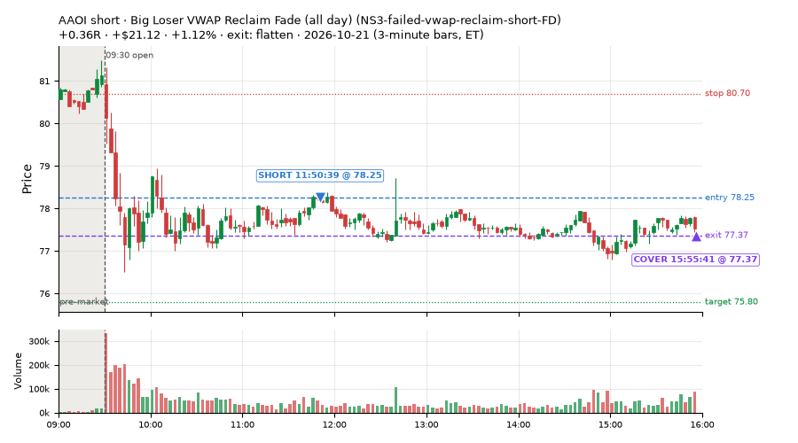
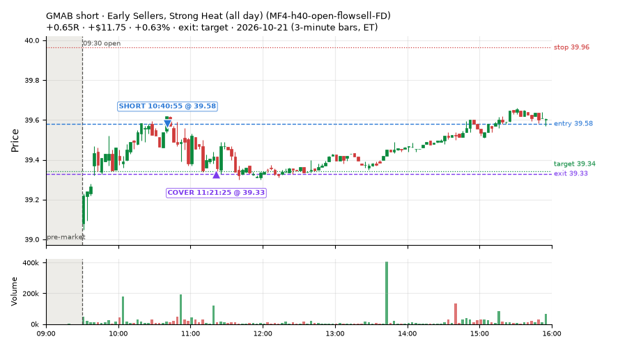
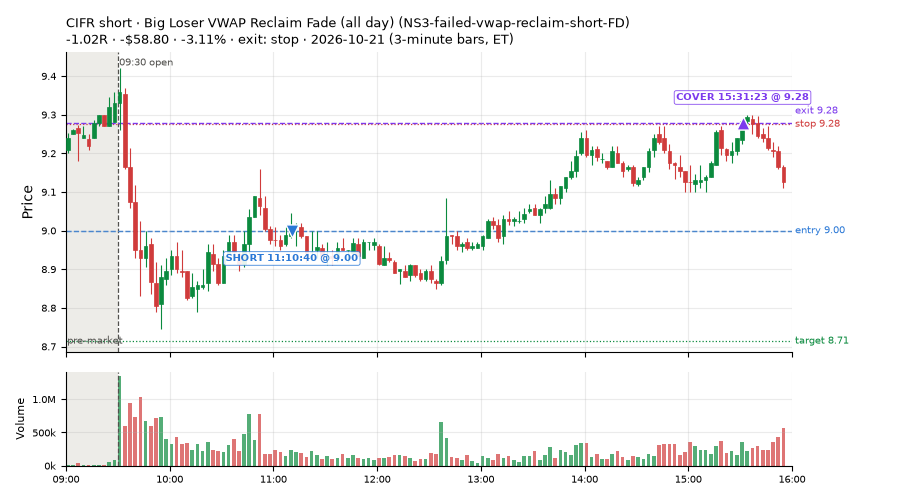
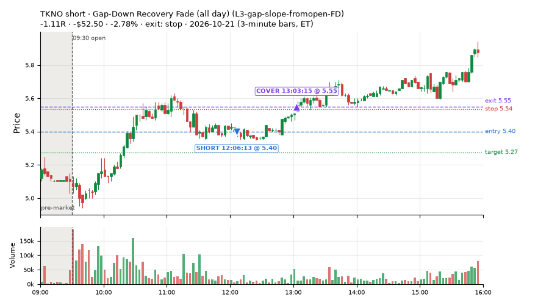
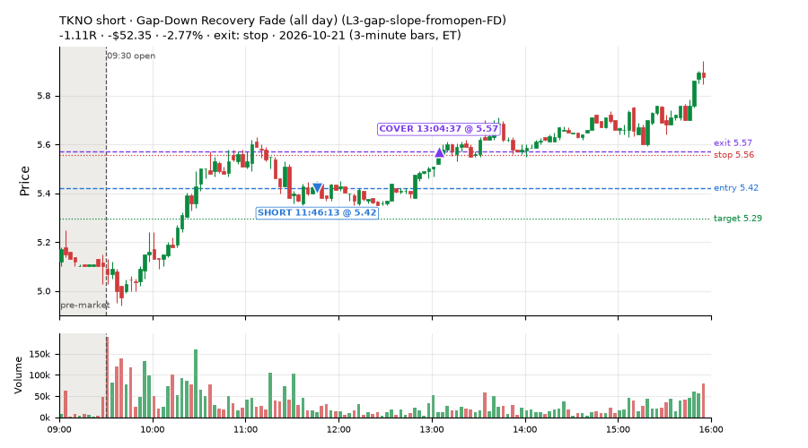
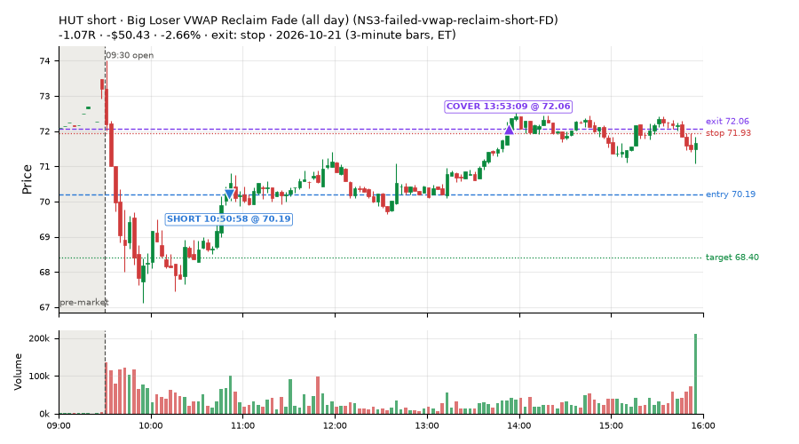

46 trades · win rate 30% · P/L $-592.95
PROBATION: no live setup has passed both locked test periods. 10 owner-directed setups added 2026-10-08 (MarcoFlow top 5 + 5 new), untested live. RW6G1 (RW6 + VWAP band guard) added 2026-10-09, probation.

| Symbol | Setup | Side | In | Out | Entry | Exit | Exit reason | % gained | P/L |
|---|---|---|---|---|---|---|---|---|---|
| AAOI | Big Loser VWAP Reclaim Fade (all day) (NS3-failed-vwap-reclaim-short-FD) | short | 10:05 | 15:55 | 78.47 | 77.37 | flatten | +1.41% | $26.52 |
| AAOI | Big Loser VWAP Reclaim Fade (all day) (NS3-failed-vwap-reclaim-short-FD) | short | 11:50 | 15:55 | 78.25 | 77.37 | flatten | +1.12% | $21.12 |
| GMAB | Early Sellers, Strong Heat (all day) (MF4-h40-open-flowsell-FD) | short | 10:40 | 11:21 | 39.58 | 39.33 | target | +0.63% | $11.75 |
| Symbol | Setup | Side | In | Out | Entry | Exit | Exit reason | % lost | P/L |
|---|---|---|---|---|---|---|---|---|---|
| CIFR | NS3-failed-vwap-reclaim-short-FD | short | 11:10 | 15:31 | 9.00 | 9.28 | stop | -3.11% | $-58.80 |
| TKNO | L3-gap-slope-fromopen-FD | short | 12:06 | 13:03 | 5.40 | 5.55 | stop | -2.78% | $-52.50 |
| TKNO | L3-gap-slope-fromopen-FD | short | 11:46 | 13:04 | 5.42 | 5.57 | stop | -2.77% | $-52.35 |
| HUT | NS3-failed-vwap-reclaim-short-FD | short | 10:50 | 13:53 | 70.19 | 72.06 | stop | -2.66% | $-50.43 |
| RIOT | NS3-failed-vwap-reclaim-short-FD | short | 11:16 | 13:53 | 13.99 | 14.34 | stop | -2.50% | $-47.25 |






Signal to fill: median 1s, 90th percentile 3s (46 trades). Bars close each minute; the order follows the bar close.
Best excursion (MFE): median 0.48R; worst (MAE) median 0.75R. 26% of trades never got +0.25R in our favour; 2 reached +1R and still closed at or below 0.
| Symbol | Setup | Best R | Worst R | Closed R |
|---|---|---|---|---|
| BKNG | MF2-open-rsimidhi-flowsell-FD | +1.66 | -1.02 | -1.00 |
| SQQQ | RW3-gapdn-rsi5pop-flowsell-short-FD | +1.15 | -1.13 | -1.07 |
| FTNT | L3-gap-slope-fromopen-FD | +0.90 | -1.20 | -1.14 |
| TKNO | L3-gap-slope-fromopen-FD | +0.52 | -1.20 | -1.11 |
| ROIV | NS3-failed-vwap-reclaim-short-FD | +0.49 | -1.26 | -1.13 |
| Entry time | Trades | Win | Avg R | P/L |
|---|---|---|---|---|
| 09:50-10:30 | 14 | 57% | +0.04 | $-35.75 |
| 10:30-11:30 | 10 | 10% | -0.68 | $-267.75 |
| 11:30-13:00 | 15 | 20% | -0.53 | $-266.46 |
| 13:00-14:00 | 3 | 33% | +0.09 | $-21.91 |
| 14:00-16:00 | 4 | 25% | +0.01 | $-1.08 |
| Setup | Trades | Win | Avg R | Adj R (net of SPY) | P/L |
|---|---|---|---|---|---|
| Failed Prior-Day-Low Break Long (0.1 ATR, low volume) [fill] (CWT14-failbrk-pdl-p10-lowvol-long) | 6.0 | 100% | +0.51 | +0.26 | $33.35 |
| Gap-Down Recovery Fade (all day) (L3-gap-slope-fromopen-FD) | 5.0 | 0% | -1.08 | -0.90 | $-162.33 |
| Early Sellers Above VWAP (MF1-945-flowsell-vwapup) owner-directed; holdouts once: Sep-Oct +0.169R n86, Apr-Jun -0.050R n429 | 1.0 | 100% | +0.43 | -0.11 | $2.46 |
| Early Sellers, Mid-High RSI (all day) (MF2-open-rsimidhi-flowsell-FD) | 1.0 | 0% | -1.00 | -0.76 | $-6.58 |
| Early Sellers, Strong Heat (all day) (MF4-h40-open-flowsell-FD) | 1.0 | 100% | +0.65 | +0.84 | $11.75 |
| Big Loser VWAP Reclaim Fade (all day) (NS3-failed-vwap-reclaim-short-FD) | 26.0 | 12% | -0.44 | -0.38 | $-464.98 |
| Gap-Down Pop Fade, Heavy Selling (all day) (RW3-gapdn-rsi5pop-flowsell-short-FD) | 2.0 | 0% | -0.71 | -0.76 | $-23.64 |
| Gap-Down Pop Fade (all day) (RW5-heat30-flowsell-rsi5pop-gapdn-short-FD) | 4.0 | 75% | +0.29 | +0.18 | $17.02 |
Market direction (SPY, beta 1) accounted for $-103.41 of today's $-592.95; the rest ($-489.54) came from the setups themselves. Avg R net of SPY: -0.29 (incl. a hedge leg's cost; report only).
14 setups live today. Today: 115 signals, 46 taken, 3 lost because another setup held the symbol (3%). Since 2026-10-06 (12 sessions): 751 signals, 464 taken, 58 lost to other setups (8%). Peak open positions today 30 of 160 slots. Earnings blackout removed 552 symbols before scanning.
Simulated playing time (not live): 285 what-if trades of signals not taken, avg -0.00R, 53% winners; of them 58 lost to another setup (avg -0.07R).
Silent: intraday_momentum · Crowded out: MF3-open-flowsell-rsi5hi, MF5-flowsell-vwapup-rsi5hi · Starved: RW3-gapdn-rsi5pop-flowsell-short-FD
| Prio | Setup | Today sig / taken | Sessions | Signals / taken / trades | Taken/day | Expected/day | Lost to other setups | Lost to (setup n) | Top skip reasons | SIMULATED: not-taken n / avg R / win | Verdict |
|---|---|---|---|---|---|---|---|---|---|---|---|
| 1 | Gap-Down Recovery Fade (all day) L3-gap-slope-fromopen-FD | 49 / 5 | 1 | 49 / 5 / 5 | 5.00 | – | 1 | L3-gap-slope-fromopen-FD 1 | not shortable / shorts off 38, spread / quote / size 5, symbol held by another setup 1 | 44 / +0.27R / 70% | ok 25.0 entries/week |
| 2 | Gap-Down Pop Fade (all day) RW5-heat30-flowsell-rsi5pop-gapdn-short-FD | 4 / 4 | 4 | 18 / 16 / 16 | 4.00 | 12.79 | 0 | – | spread / quote / size 2 | 2 / +0.62R / 100% | ok 20.0 entries/week |
| 3 | Gap-Down Pop Fade, Heavy Selling (all day) RW3-gapdn-rsi5pop-flowsell-short-FD | 3 / 2 | 4 | 18 / 13 / 13 | 3.25 | 13.59 | 0 | – | spread / quote / size 3, not shortable / shorts off 2 | 5 / +0.26R / 60% | starved 3.25 entries/day vs ~13.59 expected |
| 4 | Early Sellers, Mid-High RSI (all day) MF2-open-rsimidhi-flowsell-FD | 1 / 1 | 2 | 3 / 3 / 3 | 1.50 | 10.09 | 0 | – | – | 0 / – | watch 1.50 entries/day vs ~10.09 expected |
| 5 | Early Sellers, Strong Heat (all day) MF4-h40-open-flowsell-FD | 3 / 1 | 2 | 12 / 9 / 9 | 4.50 | 16.45 | 1 | RW5-heat30-flowsell-rsi5pop-gapdn-short-FD 1, RW3-gapdn-rsi5pop-flowsell-short-FD 1, MF3-open-flowsell-rsi5hi-FD 1 | symbol held by another setup 1, not shortable / shorts off 1, spread / quote / size 1 | 3 / -0.58R / 33% | ok 22.5 entries/week |
| 6 | Big Loser VWAP Reclaim Fade (all day) NS3-failed-vwap-reclaim-short-FD | 39 / 26 | 2 | 46 / 32 / 32 | 16.00 | 22.02 | 1 | NS3-failed-vwap-reclaim-short-FD 1 | not shortable / shorts off 10, spread / quote / size 3, symbol held by another setup 1 | 14 / -0.38R / 7% | ok 80.0 entries/week |
| 7 | Big Gainer Fade with VWAP Band Guard RW6G1-ns2-up3-vwap2sd-short | 0 / 0 | 9 | 5 / 3 / 3 | 0.33 | 0.40 | 0 | – | not shortable / shorts off 1, spread / quote / size 1 | 2 / +0.22R / 50% | slow 1.7 entries/week; ~36 weeks to 60 trades |
| 8 | Big Gainer Dip-and-Pop NS1-rsidip-rsi5pop-long | 0 / 0 | 10 | 10 / 8 / 8 | 0.80 | 0.92 | 0 | – | spread / quote / size 2 | 2 / +0.39R / 100% | slow 4.0 entries/week; ~15 weeks to 60 trades |
| 9 | Early Sellers, Mid-High RSI MF2-open-rsimidhi-flowsell | 0 / 0 | 10 | 9 / 4 / 4 | 0.40 | 1.30 | 0 | – | spread / quote / size 3, not shortable / shorts off 2 | 5 / -0.48R / 20% | slow 2.0 entries/week; ~30 weeks to 60 trades |
| 10 | Big Loser Flush Buy NS5-sma50-flush-oversold-long | 0 / 0 | 10 | 15 / 13 / 13 | 1.30 | 2.41 | 0 | – | spread / quote / size 2 | 2 / +0.85R / 100% | slow 6.5 entries/week; ~9 weeks to 60 trades |
| 11 | Afternoon VWAP Reclaim Fade NS4-pm-vwap-reclaim-oversold-short | 1 / 0 | 10 | 20 / 16 / 16 | 1.60 | 3.05 | 0 | – | not shortable / shorts off 3, spread / quote / size 1 | 4 / -0.43R / 25% | slow 8.0 entries/week; ~8 weeks to 60 trades |
| 12 | Early Sellers Above VWAP MF1-945-flowsell-vwapup | 3 / 1 | 10 | 49 / 24 / 24 | 2.40 | 5.33 | 2 | MF4-h40-open-flowsell 1, RW5-heat30-flowsell-rsi5pop-gapdn-short-FD 1, RW3-gapdn-rsi5pop-flowsell-short-FD 1 | spread / quote / size 21, symbol held by another setup 2, not shortable / shorts off 2 | 25 / -0.06R / 40% | slow 12.0 entries/week; ~5 weeks to 60 trades |
| 13 | Early Sellers, Strong Heat MF4-h40-open-flowsell | 3 / 0 | 10 | 44 / 21 / 21 | 2.10 | 7.24 | 10 | MF4-h40-open-flowsell-FD 5, MF3-open-flowsell-rsi5hi-FD 4, MF3-open-flowsell-rsi5hi 3 | symbol held by another setup 10, not shortable / shorts off 7, spread / quote / size 6 | 23 / -0.06R / 61% | slow 10.5 entries/week; ~6 weeks to 60 trades |
| 14 | Failed Prior-Day-Low Break Long (0.1 ATR, low volume) [fill] CWT14-failbrk-pdl-p10-lowvol-long | 9 / 6 | 1 | 9 / 6 / 6 | 6.00 | – | 0 | – | spread / quote / size 3 | 3 / -0.58R / 33% | ok 30.0 entries/week |
Every trade is attached as a CSV you can open and edit in Excel or Google Sheets. Live page: https://misiti15.github.io/MCF/live/